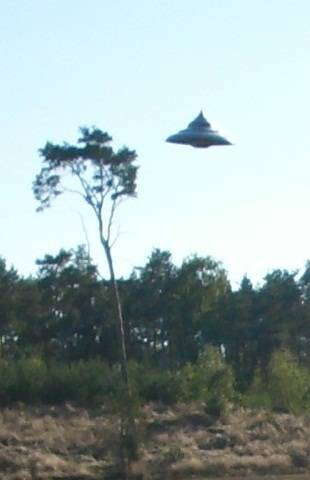

画像解析の専門家が本物と認めた最良の UFO 写真 → この正体を解く （途中2）

TODO: 要追記（類似の事例）
履歴
(2023-06-23) 追加。Web からソース記事が消え去る前に引用しておく。ついでに UFO の正体を解説。
(2022-05-18) 追加。 画像解析の専門家が本物と認めた最良の UFO 写真 → この正体を解く （途中1） (2022-05-18)
(2020-06-28) 作成。 画像解析の専門家が本物と認めた最良の UFO 写真 (2020-06-28)
(2020-06-28 begin)
前置
・撮影場所は下記
The spinning top shaped UFO was spotted by a man riding his bike in a remote area near the village of Jastrowo, about 180 miles from Warsaw.
のように記載されているが、撮影日時の記載はないようだ。たぶん、比較的最近の撮影か。
・目撃者いわく…。UFO が樹木の頂上に接触する奇妙な音が聞こえた。後に UFO は消えた。写真を撮影した後の記憶がない。
一部引用
Photographs Showing UFO Hovering Over A Forest Dubbed 'Best We Have'
 A top flying saucer expert has hailed photos showing a UFO hovering over a forest as being potentially the best he's seen. Philip Mantle has been left baffled by the sighting in Poland and doesn't believe it to be a hoax. The mind-boggling snaps have also been scrutinised and declared genuine by photo expert Jason Gleave - who served in the Royal Air Force. The spinning top shaped UFO was spotted by a man riding his bike in a remote area near the village of Jastrowo, about 180 miles from Warsaw. It made a strange rustling sound as it rubbed against the top of a tree before it disappeared. The freaked-out witness took pictures of the scene before rushing home where, to his amazement, he had captured the UFO on five frames. He sent the snaps to Polish ufologist and journalist Robert Bernatowicz, but is keeping his name secret. The man fears he may have suffered 'missing time' - when UFO witnesses report a gap in their memory which sometimes, under hypnosis, turns out to be an alien abduction experience. ref: Photographs Showing UFO Hovering Over A Forest Dubbed 'Best We Have' - LADbible - https://www.ladbible.com/community/weird-photographs-showing-ufo-hovering-over-a-forest-dubbed-best-we-have-20200626
コメント
・樹木と比較すると、UFO のサイズがかなり小さいことが推定できる。直径 1～2m 程度か。
(2020-06-28 end)
(2022-05-18 begin)
前置き
- 昨日の記事で Philip Mantle に言及したが、その時に彼が関係した二年前の上の記事がデータベースの検索でヒットした。そこで問題の写真を見返したところこの UFO の正体に思い至ったので記録しておく。たぶん、まだ誰もこの UFO の正体に気づいていない筈。
ヒント
この写真をよく見れば、勘が良い人ならおかしな点に気づくはず。サイズは問題にしていない。
なお、専門家も認めるとおり、この写真は捏造ではない。
(2022-05-18 end)
(2023-06-23 begin)
前置き
既に 1年以上が経過してしまったが、この UFO の正体を説明しておく。
ついでに、元となったソース記事が Web から消え去る前にまるごと引用しておく。10年もたてば 20-30% の Web 記事は消え去る。理由は様々だが、記事の出版元が潰れたり、事業の統廃合や、Web サーバのレンタル費用の支払停止、著作者の死去（今後、増加する筈）などが一般的。既に今の時点でも、かつてのソース記事にあった写真の一枚が欠落している（UFO の背後に樹木が写っている写真）。
私の記憶が正しければ…。この UFO 写真、特に最初の 1枚目の写真が私がそれまで抱いていた UFO 観を完膚なきまでに破壊した(*0)。この写真こそが UFO の本当の正体を私に教えてくれた。その意味で実に感慨深い写真。
(*0)
最初に記事にした 2020-06-28 の時点では全く気づかず、その 2年後の 2022-05-18 に偶然、過去記事の写真が目に入って気づいた。その意味で私の目は永らく節穴だった。無駄かつ無意味なようだが、過去記事の長期的な蓄積（データベース化）と簡単で素早い専用検索ツールが非常に重要なことがこの事例から今更ながら痛感できる。振り返ってみれば、2020-06-28 の過去記事こそが私の UFO に関する座標基準、原点となった。
この UFO の正体
この手の UFO 写真の正体は過去記事で何度も解明してきたので、今更ではあるがこの UFO 写真も簡単に説明しておく。この UFO の正体も「自転する orb」。その理由は以下のとおり。
・回転対象になっていない。下部の台のような形の突起が中心軸から著しく右へ偏心している。
・最も広がった円盤部分も左側と右側では対称になっていない。右側はより鋭角になっており、左側は丸みを帯びている。
・目撃者は撮影の直後からの記憶がない。これは現場の EMF 異常による 意識障害/記憶障害 だと判断できる(*1)。
・人間や ET などの知的生物が製造した飛行物体ならば、このような回転対称からの著しい歪みは生じない。UFO の周囲を取り巻く（とされる）力場による光学歪として説明することも困難。力場による光学歪ならこのような歪にはならないし、陽炎のような効果を伴う筈。実際に、UFO の背後に樹木が写っている写真（下に拡大）に注目すると、UFO の背後の枝や葉は歪んでいない。
なお、「自転する orb」の写真は他にも少なからぬ事例（下）があり、形状や質感、対称性の歪という点で共通している。
… （TODO: 要追記） …
(*1)
UFO 事例ではこのような 意識障害/記憶障害 は無数に報告され、ET などの未知の知性体 による意識操作 (screen memory) とか 記憶操作 (missing-time) だと誤解されてきた。それゆえ退行催眠による記憶の取り戻しの試みが多数なされてきた。
この退行催眠が、ただでさえ迷宮の様相を呈している UFO の謎を、さらに引っ掻き回して手のつけられぬ状況（さらなる地下大迷宮への迷い込み）を招いた。
いわく…
・UFO の中で ET と人類の hybrid と会った、
・自分の hybrid の赤子を抱かされた、
・無数のガラス・チューブに入った ET の胎児を見た、
・映像によって人類の環境汚染を警告された、
・自分は ET の生まれ変わりであることを思い出した、
・近々迫った地球規模の破局のシーンを見せられた
…などなど。
だが、もつれにもつれた糸を解けば、そこには「UFO = orb * 意識障害」という枯れ尾花が顕れる。* は相乗効果を意味する演算子。
ソース記事の引用
ref: Photographs Showing UFO Hovering Over A Forest Dubbed 'Best We Have' - LADbible https://www.ladbible.com/community/weird-photographs-showing-ufo-hovering-over-a-forest-dubbed-best-we-have-20200626
DeepL
UFOが森の上空をホバリングしている写真、「私たちが持っている最高のもの」と呼ばれる フロッシー・パーマー 14-18分
公開日時：2020年6月26日 15:06 BST | 最終更新 2020年6月26日 15:06 BST
空飛ぶ円盤のトップ専門家は、森の上空をホバリングするUFOを写した写真は、彼が見た中で最高のものである可能性があると賞賛している。
フィリップ・マントル氏は、ポーランドで目撃されたUFOに困惑し、デマだとは信じていない。
イギリス空軍に所属していた写真専門家のジェイソン・グリーブ氏も、この気の遠くなるようなスナップを精査し、本物と断言した。
回転するトップ型のUFOは、ワルシャワから約180マイル離れたジャストロヴォ村近くの人里離れた場所で、自転車に乗っていた男性によって発見された。
UFOは奇妙な音を立てながら、木のてっぺんにこすれて消えていった。
パニックになった目撃者は、急いで家に帰る前にその光景を写真に撮った。
彼はそのスナップをポーランドのUFO研究家でジャーナリストのロバート・ベルナトヴィッチに送ったが、彼の名前は秘密にしている。
UFOの目撃者が催眠術のもとで記憶の空白を報告し、それがエイリアンの誘拐体験であることが判明することがある。
ベルナトヴィッチ氏は言う： 「彼は本名と姓を名乗ることを恐れている。ポーランドでは、UFOについて話すことは、精神的な問題を抱えた人だと思われることを意味します。
「目撃者はUFOを見たと報告し、写真を撮った。
バーナトヴィッチは、1979年にUFOに興味を持ち始めて以来、何百件もの事件を調査してきた英国UFO研究協会の元調査部長マントル氏に依頼した。
ウェストヨークシャーのポンテフラクト出身のマントル氏は言う： "私は長年に渡り、数多くのUFO写真とされる事件を調査してきたが、そのほとんどは、慣例的なものかデマであることが判明した"。
彼は元RAFのジェイソン・グリーブ氏に写真を送った。彼は現在UFO写真分析を専門にしている。
グリーヴ氏は、写真がフォトショップで加工されたり、改ざんされたものではなく、UFOは地上から200フィート（約15メートル）ほど離れたところでホバリングしている本物の物体であると信じている。
フィリップ・マントル
ブリティッシュ・エアロスペース・エアバス部門で働いたこともあるグリーヴ氏は言う： 「そのクオリティの高さに驚きました。
「物体の動きを確認するために、5つの画像を重ね合わせました。それは、地上から高度約150-200フィート以内にとどまり、約200フィートの小さな半径で動いているように見えました。
"また、分析プロセスに関して非常に顕著で役に立ったのは、葉の塊などであり、これは、物体とその周囲および樹木の位置に対する遠近感を確認するために非常に生産的であった。
"未知のカメラオペレーターは、それぞれの画像で5つの微妙に異なる位置から撮影したようだが、認識できる葉や木の枝がそれぞれに見られることから、すべておおよそ数フィートの距離内にある。
"画像に関しては、他の重要な要素、位置（対象物までの距離をより正確に測るため）太陽の位置、時間帯（相対的な影など）、木々などだけでなく対象物自体、これらの情報がなければ、より正確な結論を出すことが難しくなる。
"物体自体は構造を持っているように見え、金属的な外観で、大きな円形の主要な基部/本体は、尖った頂点（教会の尖塔に似ている）に向かって上方に先細りになっている。
"また、地面上の物体の影は検出されず、これは、太陽がカメラオペレーターの後ろにあり、したがって、影を遠くの葉（近くの中央の木に似ている）の方にずらして配置していると私に思わせる。
"私はまた、物体を吊り下げるための装置やケーブルシステムを示していない物体の拡大された強化されたビューを示す画像の1つをエンボス加工しました。
"5つの画像を分析した私の結論では、構造化された物体が存在し、それは未知の起源であると信じている。"
元記事
Photographs Showing UFO Hovering Over A Forest Dubbed 'Best We Have' Flossie Palmer 14-18 minutes
Published 15:06, 26 June 2020 BST | Last updated 15:06, 26 June 2020 BST
pic
A top flying saucer expert has hailed photos showing a UFO hovering over a forest as being potentially the best he's seen.
Philip Mantle has been left baffled by the sighting in Poland and doesn't believe it to be a hoax.
pic
The mind-boggling snaps have also been scrutinised and declared genuine by photo expert Jason Gleave - who served in the Royal Air Force.
The spinning top shaped UFO was spotted by a man riding his bike in a remote area near the village of Jastrowo, about 180 miles from Warsaw.
It made a strange rustling sound as it rubbed against the top of a tree before it disappeared.
The freaked-out witness took pictures of the scene before rushing home where, to his amazement, he had captured the UFO on five frames.
He sent the snaps to Polish ufologist and journalist Robert Bernatowicz, but is keeping his name secret.
The man fears he may have suffered 'missing time' - when UFO witnesses report a gap in their memory which sometimes, under hypnosis, turns out to be an alien abduction experience.
pic
Mr Bernatowicz said: "He is afraid to give his real name and surname. In Poland talking about UFOs means that people will take you as a person with mental problems.
"The witness reports that he saw a UFO then took the photographs and then has a break in his memory of what happened next."
Bernatowicz has now turned to Mr Mantle, formerly Director of Investigations for the British UFO Research Association, who has probed hundreds of cases since his interest began in 1979.
Mr Mantle from Pontefract in West Yorkshire said: "I have worked on a number of alleged UFO photo-cases down the years with most of them turning out to either be something convention or a hoax."
He sent the pictures to former RAF man Jason Gleave who now specialises in UFO photo analysis.
Mr Gleave believes the pictures have not been photoshopped or tampered with and the UFO is a genuine object hovering around 200ft off the ground.
pic
Philip Mantle.
Mr Gleave, who has also worked for British Aerospace Airbus division, said: "I was amazed at such a high quality they were.
"I overlaid the five separate images to confirm the movement of the object. It appeared to move in a small radius of approximately 200 feet, staying within approximately 150-200 feet altitude from ground level.
"Also very noticeable and helpful regarding the analysis process was the mass of foliage etc, this was very productive to ascertain perspective relative to the object and its surroundings and tree line positions.
"The unknown camera operator appeared to have taken the photographs from five slightly different positions in each of the images but all within an approximate few feet distance from each other as recognisable foliage and tree branches are seen in each.
"Other important factors come into play regarding the images, location (to gauge more accurately the distance to the object) Sun positioning, time of day (relative shadows etc) not only trees etc but the object itself, without this information makes it more difficult to give a more accurate conclusion.
"The object itself appears to have structure and be metallic in appearance, exhibiting a larger main circular base/body tapering upwards to a pointed apex (similar to a church steeple) below the larger circular base a smaller domed protrusion is seen.
"Also the shadow of the object on the ground is not detected, which makes me assume the Sun is behind the camera operator thus positioning the shadow off towards the distant foliage (similar to the nearby central tree).
"I have also embossed one of the images showing an enlarged and enhanced view of the object which is exhibiting no device or cabling system to suspend the object.
"In my conclusion to my analysis of the five images draws me to believe there is a structured object present and it is of an unknown origin."
(2023-06-23)
初出
❑ 画像解析の専門家が本物と認めた最良の UFO 写真 → この正体を解く （途中2） (2023-06-23)